WELCOME TO THE BINDING OF ISAAC:REBIRTH WIKI
CONTENT
Achivements(TODO) Challenges(TODO) Completion Marks(TODO)
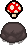
Items(TODO)
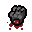
Trinkets(TODO)
Completion Marks(TODO)
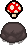
Items(TODO)
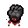
Trinkets(TODO)
 Characters(TODO)
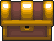
Chapters(TODO)
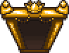
Rooms(TODO)
Characters(TODO)
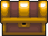
Chapters(TODO)
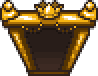
Rooms(TODO)
 Transformations(TODO)
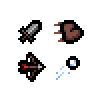
Attributes(TODO)
Bosses(TODO)
Monsters(TODO)
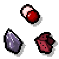
Pickups(TODO)
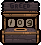
Modes(TODO)
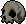
Objects(TODO)
Effects(TODO)
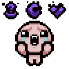
Curses(TODO)
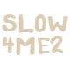
Seeds
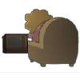
Endings
Music(TODO)
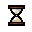
Version History(TODO)
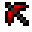
Modding(TODO)
Transformations(TODO)
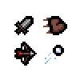
Attributes(TODO)
Bosses(TODO)
Monsters(TODO)
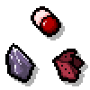
Pickups(TODO)
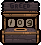
Modes(TODO)
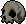
Objects(TODO)
Effects(TODO)
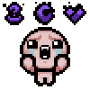
Curses(TODO)
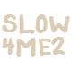
Seeds
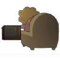
Endings
Music(TODO)
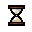
Version History(TODO)
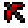
Modding(TODO)
ABOUT THE GAME
The Binding of Isaac: Rebirth is a randomly generated action RPG shooter with heavy roguelike elements. Players will accompany Isaac on a quest to escape his mother, facing off against droves of mysterious creatures, discovering secrets, and fighting fearsome bosses. Along the way, Isaac can find bizarre treasures that change his form and give him super-human abilities. But it won't be easy!
Rebirth is the remake of the original game that sports a game engine that runs at 60 FPS, pixelated style artwork, polished visual effects, and a new soundtrack from Ridiculon. Oh yeah, hundreds of new rooms, synergies, and retuned enhancements by the series creator, Edmund McMillen and other developers. There are three DLCs available for Rebirth, (except in Rebirth) The Binding of Isaac: Afterbirth, (in Afterbirth † and Repentance) The Binding of Isaac: Afterbirth † and (in Repentance) The Binding of Isaac: Repentance. Did we mention the poop?